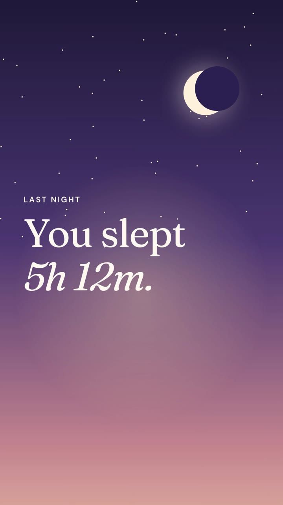
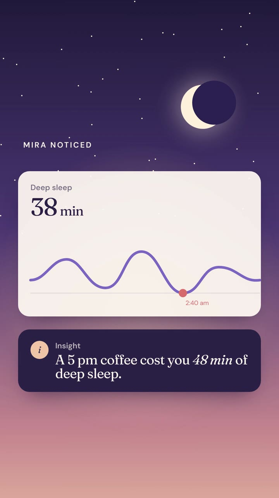
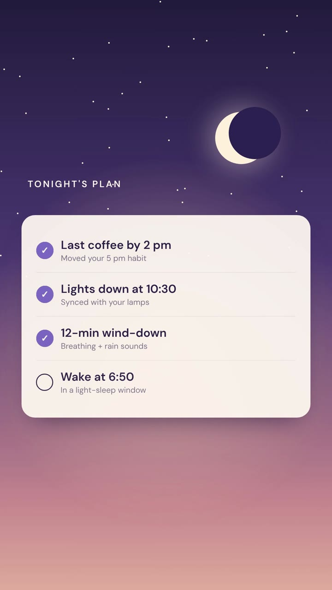
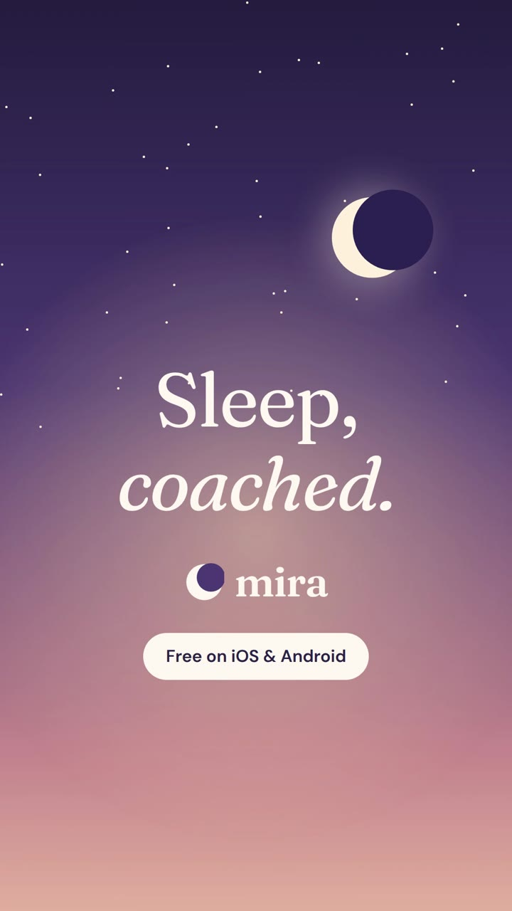

Mira
A sleep-coaching app. A vertical ad built for Reels, TikTok and Shorts: calm, personal, and readable with the sound off.
Mira is a fictional brand. We wrote the brief ourselves and built the film to the same standard and process as client work. All people, stats and quotes in it are invented.
The brief
Sleep apps advertise with generic stock of people yawning. Vertical feeds are loud; the brief was to stop the thumb by being the quietest thing on screen, and to show the product's actual value, a specific insight about your night.
The idea
Speak to one person: “You slept 5h 12m.” Then show what Mira noticed, a deep-sleep graph dipping at 2:40 am and the reason why, a 5 pm coffee. Tonight's plan ticks itself off, and the sky slowly fades from night to dawn across the whole ad.




How it's made
Warm serif italics against a hand-built dusk sky with a glowing crescent moon. The app cards are real HTML UI, so the graph draws itself and the checklist animates crisply at phone resolution. Safe zones are kept clear for platform captions and buttons.
Type: Fraunces · DM Sans
Credits
Concept, script, art direction, animation, sound design and edit: NexusPulse Studio.